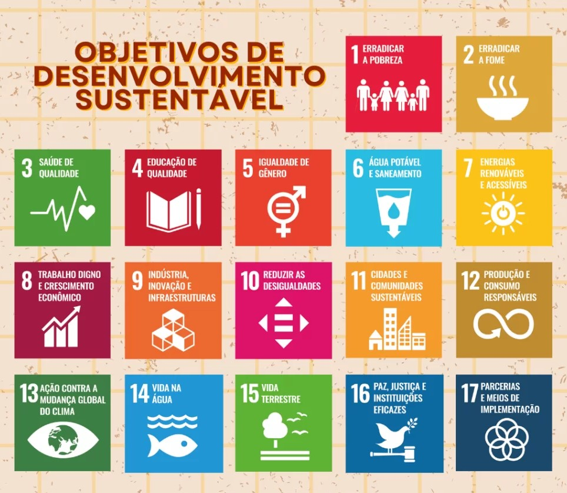
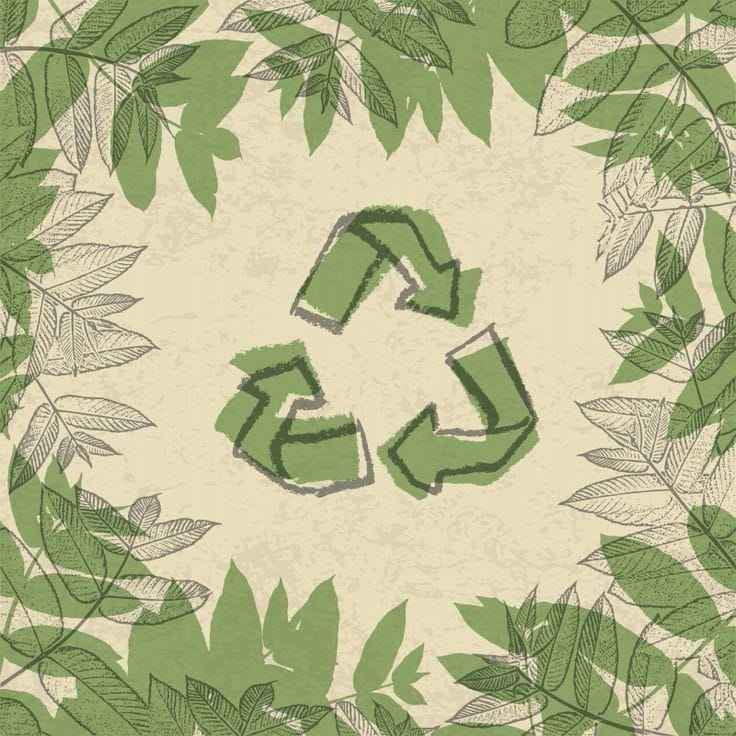
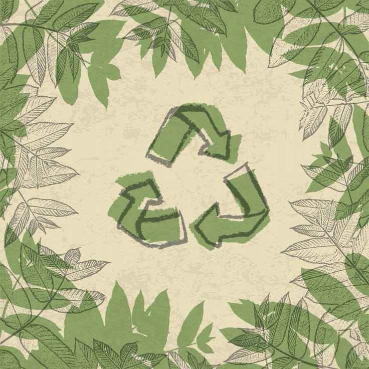

Sustentabilidade em ação: O Poder da ODS 12
Venha conhecer mais sobre a ODS12

As Objetivos de Desenvolvimento Sustentável (ODS) da ONU são um conjunto de 17 metas globais que buscam erradicar a pobreza, promover a igualdade, garantir saúde, educação e sustentabilidade ambiental. Essas metas representam um compromisso global para criar um mundo mais justo e inclusivo, fortalecendo parcerias e promovendo paz e justiça. A importância das ODS é fundamental, direcionando esforços em direção a um desenvolvimento sustentável, enfrentando desafios críticos como desigualdade, mudança climática e degradação ambiental.
Saiba Mais
A ODS 12 busca abordar o consumo excessivo, a produção insustentável e o desperdício, promovendo uma abordagem mais consciente e responsável em relação aos recursos naturais. Além disso, ela desempenha um papel fundamental na transição para uma economia mais verde e na mitigação das mudanças climáticas, contribuindo para a construção de um futuro mais sustentável e equitativo para todos.
Saiba Mais sobre a ODS12
 

3Rs é uma abordagem holística para lidar com os resíduos, promovendo a redução do desperdício, a reutilização de recursos, a reciclagem de materiais e a recuperação de energia, com o objetivo final de minimizar o impacto ambiental e promover um uso mais eficiente dos recursos. Esses princípios são fundamentais para a gestão de resíduos sustentável e a transição para uma economia circular.
- Redução
- Reciclagem
- Reuso
Como podemos fazer a nossa parte?
A Meta 12.5 dos Objetivos de Desenvolvimento Sustentável (ODS) da ONU tem o seguinte objetivo: "Reduzir substancialmente a produção de resíduos por meio da prevenção, redução, reciclagem e reuso." A reutilização é fundamental para conservar recursos, reduzir o desperdício, economizar dinheiro e promover a responsabilidade ambiental. Ela desempenha um papel essencial na construção de um mundo mais sustentável e na mitigação dos impactos negativos das atividades humanas no planeta.
Cadastre-se na aba "Cadastramento" no nosso menu para que sua casa vire um ponto de coleta e faça do mundo um lugar melhor!
Quer fazer a reciclagem e não sabe como? acesse esse link e entenda os passos :)
Saiba Mais